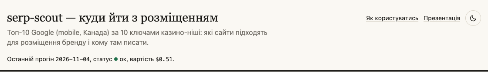
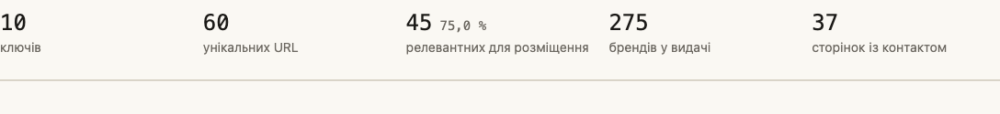
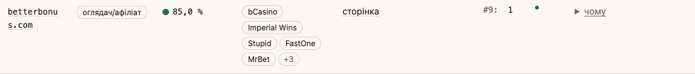
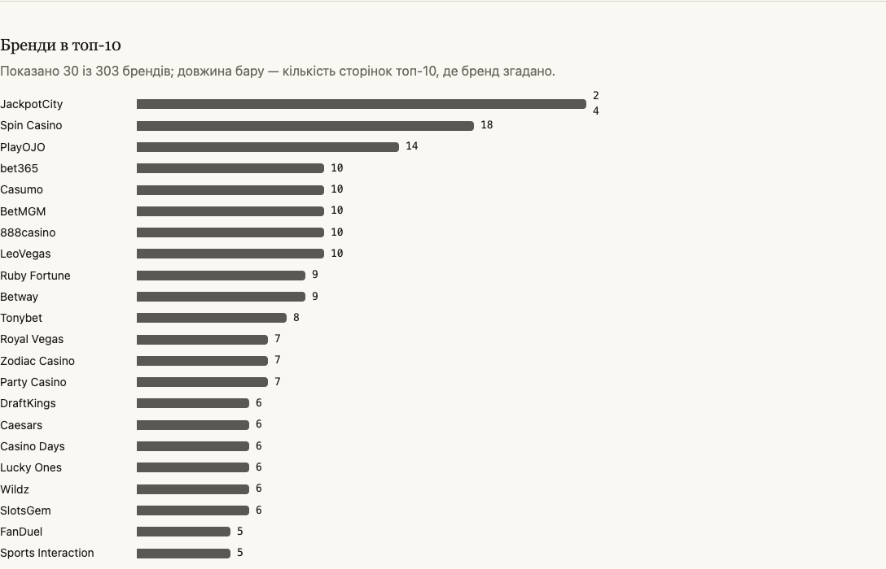
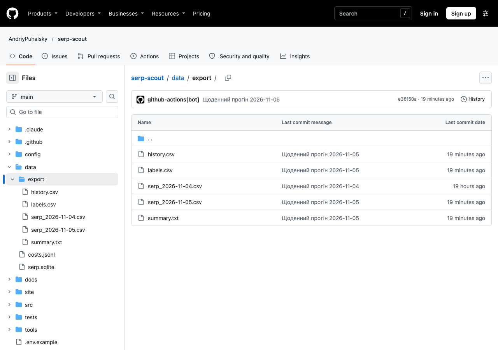
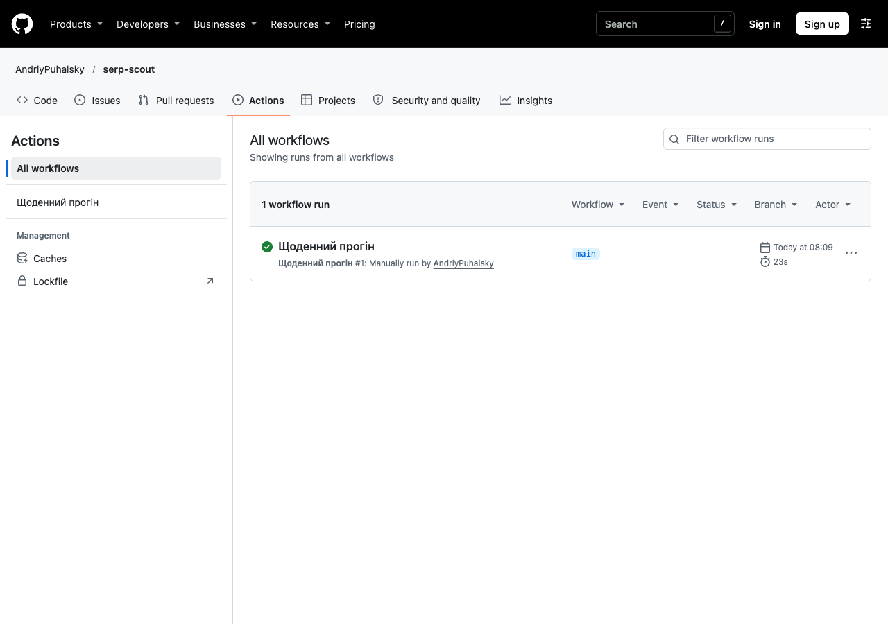

Знімки екрана в методичці зроблено 2026-11-04. Звіт оновлюється щодня, тож числа у вас будуть інші, а кнопки, колонки й фільтри — на тих самих місцях. Якщо ви повертаєтесь до методички завтра, почніть з кроку 1, а потім переходьте до останньої пройденої контрольної точки.
Крок 0Що serp-scout робить за вас
Щоранку serp-scout робить те, на що у вас пішов би день: шукає в Google десять запитів казино-ніші так, як їх бачить людина з телефона в Канаді, бере перші десять результатів за кожним і читає кожну сторінку. Для кожної сторінки модель Claude вирішує, чи можна там розмістити бренд, які казино там уже згадано і кому писати.
- Googleтоп-10 за кожним ключем, мобільна видача, Канада
- Таблицяключ, позиція, адреса сторінки, домен, дата
- Claudeчитає сторінку: тип сайту, чи підходить для розміщення, бренди, контакт
- Звітсайт, який ви відкриваєте; оновлюється щодня
Має бути так
Ви можете переказати колезі одним реченням: «serp-scout щодня бере топ-10 мобільного Google по Канаді за нашими ключами і показує, на яких із цих сайтів можна розміститись і кому писати».
Крок 1Відкрийте звіт і перевірте, що він свіжий
Список, складений за вчорашньою видачею, може вже не збігатися з Google. Тому щоразу ми починаємо з дати.
Спершу відкрийте в Chrome serp-scout.netlify.app. Тепер прочитайте рядок під заголовком: «Останній прогін …, статус …, вартість …».
Має бути так

Після слів «Останній прогін» стоїть сьогоднішня дата, статус «ок» із зеленою крапкою. Вартість — скільки коштувала сьогоднішня перевірка; для вашої роботи вона не важлива.
Якщо не так → дата вчорашня, статус «частково», «бюджет вичерпано» або «збій».
Крок 2Прочитайте підсумок
П'ять чисел під шапкою кажуть, скільки роботи на сьогодні. Числа «добігають» до свого значення за пів секунди — дочекайтесь, поки вони зупиняться.
Тепер прочитайте п'ять плиток зліва направо.
Має бути так

- ключів
- скільки пошукових запитів serp-scout перевіряє щодня.
- унікальних URL
- скільки різних сторінок знайшлось у топ-10 за всіма ключами разом; сторінка, що стоїть за двома ключами, рахується один раз.
- релевантних для розміщення
- скільки з цих сторінок підходять, щоб розмістити бренд; відсоток поруч — їхня частка від усіх сторінок. Це число знадобиться в кроці 3.
- брендів у видачі
- скільки різних казино-брендів згадано на цих сторінках.
- сторінок із контактом
- де модель знайшла спосіб зв'язатися: email, сторінку контакту, Telegram або форму.
Крок 3Залиште лише релевантні сайти
Головна таблиця «Куди йти з розміщенням» уміє показувати всі сторінки з топ-10 або лише ті, де можна розміститись. Нам потрібні другі.
Прокрутіть до таблиці «Куди йти з розміщенням». Над нею, у рядку фільтрів, знайдіть галочку «лише релевантні» — вона ввімкнена щоразу, коли ви відкриваєте звіт. Тепер прочитайте рядок над таблицею: «Показано … із … URL».
Має бути так

Галочка «лише релевантні» стоїть, поруч із «Показано» видно сіру плашку «лише релевантні». Перше число в «Показано … із … URL» — скільки сторінок у таблиці зараз, друге — скільки їх усього.
Зверніть увагу на поле «пошук по домену»: якщо ввести туди частину адреси, наприклад casino, у таблиці лишаться лише домени з цим словом. Спробуйте, а потім зітріть текст — контрольна точка рахується без пошуку. Якщо змінили кілька фільтрів і заплутались, натисніть «Скинути фільтри» над таблицею. Ця кнопка з'являється лише тоді, коли змінено хоч один фільтр або введено текст у пошук; у звичайному стані її немає.
Якщо не так → замість таблиці напис «Даних поки немає».
Крок 4Зрозумійте тип сайту
Колонка «Тип» показує, що це за сайт. Від типу залежить, чи писати туди взагалі.
| Чип у звіті | Код у CSV | Що це | Що робити |
|---|---|---|---|
| оглядач/афіліат | review_affiliate | рейтинги й огляди казино, добірки бонусів; заробляють на партнерських посиланнях | головна ціль: пишіть про розміщення |
| медіа | news_media | новинний сайт або журнал, іноді зі спонсорськими добірками | пишіть, якщо в «чому» є Sponsored або Advertise |
| оператор казино | casino_operator | сайт самого казино | пропускайте: це конкурент, а не майданчик |
| енциклопедія | encyclopedia | Вікіпедія та подібні довідники | пропускайте |
| регулятор | regulator_gov | державний або ліцензійний орган | пропускайте |
| магазин застосунків | app_store | App Store, Google Play | пропускайте |
| форум | forum_community | форуми й спільноти | пропускайте |
| інше | other | не вписалось у жоден тип | відкрийте «чому» (крок 5) і вирішіть самі |
Тепер відкрийте список «тип сторінки» над таблицею і виберіть «оглядач/афіліат». Подивіться, як змінилось «Показано … із … URL», а потім поверніть «усі типи».
Має бути так

У списку «тип сторінки» лише ті типи, що трапились у сьогоднішній видачі. Прикрийте таблицю вище долонею і назвіть два типи, які ви пропускаєте. Перевірте себе за колонкою «Що робити».
Крок 5Прочитайте, чому модель так вирішила
Перш ніж писати сайту, варто знати, на чому тримається рішення моделі. Пояснення сховане за кнопкою «чому».
У першому рядку таблиці натисніть «чому» в останній колонці.
Має бути так

Під кнопкою з'явилось пояснення українською, а під ним — «заголовок», «впевненість», «джерело тексту», «сигнали розміщення» і «краща позиція». Знайдіть у «сигналах розміщення» фразу зі сторінки, яка підказує, що розміщення продаються: Advertise, Sponsored, Write for us або згадку про комісію.
Зверніть увагу на колонку «Релевантність»: зелена крапка — сайт підходить, червона — ні, жовта — модель не впевнена, порожнє коло — сторінку ще не розмічено. Якщо впевненість нижче 60 %, біля домену стоїть позначка «перевірити»: такий сайт відкрийте й оцініть самі.
Якщо не так → у «чому» написано, що сторінка ще не пройшла розмітку.
Крок 6Знайдіть контакт
Колонка «Контакт» показує, куди писати. Там буває email (відкриває лист), слово «сторінка» (відкриває сторінку зв'язку або Advertise), @ім'я в Telegram, «форма на сайті» або «—», якщо модель контакту не знайшла. Іноді там стоїть звичайний текст без посилання, наприклад «Footer link: Get Listed»: модель побачила контакт у тексті сторінки, але прямого посилання немає. Тоді відкрийте домен і знайдіть цей пункт у меню або футері сайту.
Знайдіть у колонці «Контакт» перший рядок, де стоїть підкреслене посилання — email або слово «сторінка», — і натисніть на нього.
Має бути так

Email відкриває новий лист у вашій пошті з адресою в полі «Кому». «Сторінка» відкриває сайт у новій вкладці. Звіт лишається на місці.
Якщо в рядку «—», натисніть на домен у першій колонці, прокрутіть сторінку сайту донизу і шукайте Advertise, Contact або Write for us — найчастіше вони у футері.
Крок 7Подивіться, за якими ключами сайт у топі
Сайт, що стоїть високо за кількома ключами, бачить більше людей. Колонка «Позиції» показує це для кожного ключа: #3: 2 означає «за ключем номер 3 сайт сьогодні на другому місці». Лінія поруч — спарклайн, історія позиції за днями: перше місце вгорі, сьогоднішня точка підсвічена зеленим. Поки днів мало, замість лінії буде одна точка.
Розгорніть «Ключі» над таблицею і знайдіть, який запит ховається за першим номером у колонці «Позиції» першого рядка.
Має бути так

Ви знайшли запит у списку «Ключі»; поруч у дужках — його кластер, групу схожих запитів (її можна вибрати у фільтрі «кластер»). Якщо навести мишу на номер ключа в таблиці, запит з'явиться підказкою.
Тепер прокрутіть до блоку «Історія позицій» під брендами. Там для кожного ключа — три найвищі релевантні домени і їхня позиція в кожен день прогону; коли днів стане більше, з'явиться колонка «Зміна».
Перевірте себе: вчора сайт був третім, сьогодні другий. Це покращення — менше число означає вище в Google, і на спарклайні в таблиці лінія йде вгору.
Крок 8Перевірте конкурентів
Сайт, що вже рекламує казино-конкурентів, найімовірніше продасть місце і вам. Блок «Бренди в топ-10» показує, кого згадують найчастіше: довжина бару — кількість сторінок, де є бренд.
Прокрутіть до «Бренди в топ-10», запам'ятайте верхній бренд і виберіть його у фільтрі «бренд» над таблицею.
Має бути так

Ви можете назвати три верхні бренди. Після вибору у фільтрі «бренд» у таблиці лишились тільки сторінки, де цей бренд згадано, а над таблицею з'явилась плашка «бренд: …».
Наостанок натисніть «Скинути фільтри», щоб повернути таблицю до звичайного вигляду.
Крок 9Складіть список на сьогодні
Тепер ви все це робите самі. Завдання: виберіть із сьогоднішнього звіту 5 сайтів для розміщення і заповніть таблицю нижче.
Скопіюйте шапку таблиці в Excel або Google Таблиці і заповніть п'ять рядків. Кожен сайт має бути релевантним, мати контакт (не «—») і причину з «чому».
| # | Домен | Тип | Контакт | Бренди-конкуренти | Чому |
|---|---|---|---|---|---|
| 1 | |||||
| 2 | |||||
| 3 | |||||
| 4 | |||||
| 5 |
Шапка для вставки в Excel (табуляцією між колонками):
Домен Тип Контакт Бренди-конкуренти ЧомуПідказка 1: де що шукати
Релевантність — крок 3, тип — крок 4, причина — крок 5, контакт — крок 6, бренди — крок 8.
Підказка 2: порядок дій з пропусками
- Перевірте дату в шапці.
- Переконайтесь, що стоїть галочка «…».
- У фільтрі «тип сторінки» виберіть «…».
- Ідіть по рядках згори вниз: пропускайте ті, де в колонці «Контакт» стоїть «…» або біля домену є позначка «…».
- Для кожного рядка, що лишився, відкрийте «…» і перекажіть причину одним реченням.
Підказка 3: повний порядок дій
- Перевірте, що після «Останній прогін» стоїть сьогоднішня дата і статус «ок».
- Переконайтесь, що стоїть галочка «лише релевантні».
- У фільтрі «тип сторінки» виберіть «оглядач/афіліат».
- Ідіть по рядках згори вниз — таблиця вже впорядкована за кращою позицією. Пропускайте рядки з «—» у «Контакт» і з позначкою «перевірити».
- Для кожного рядка, що лишився, натисніть «чому» і перекажіть причину одним реченням.
- Перепишіть у таблицю домен, тип, контакт і 2–3 бренди з чипів у колонці «Бренди».
- Зупиніться на п'ятому рядку.
Крок 10Заберіть дані в Excel
Усе, що є у звіті, щодня зберігається ще й у CSV-файлах — їх можна відкрити в Excel, відсортувати і відфільтрувати по-своєму.
labels.csv- одна сторінка — один рядок:
url,domain,site_type(коди з таблиці кроку 4),relevant(1 — так, 0 — ні),confidence(впевненість від 0 до 1),brands(через «;»),contact_email,contact_page,reason(те саме, що в «чому»),needs_review(1 — «перевірити»),placement_signals. serp_<дата>.csv- видача за день:
keyword,position,url,domain,run_date. history.csv- позиції за всі дні:
keyword,url,run_date,position.
Відкрийте теку data/export на GitHub, натисніть labels.csv і завантажте його кнопкою зі стрілкою вниз (Download raw file) праворуч над вмістом. В Excel відкрийте файл через «Файл → Імпорт», тип «CSV», кодування «Unicode (UTF-8)».
Має бути так

В Excel файл розкладено по колонках, текст у колонці reason читається українською.
Якщо не так → замість українських літер у reason незрозумілі символи.
Крок 11Як звіт оновлюється сам
Щодня близько 09:00 за Києвом GitHub Actions (сервіс, який запускає програми за розкладом) робить новий прогін: збирає видачу, розмічає нові сторінки, зберігає дані в репозиторій. За кілька хвилин Netlify публікує оновлений звіт, а в Telegram приходить зведення.
Відкрийте сторінку Actions і подивіться на верхній запуск «Щоденний прогін».
Має бути так

У верхнього запуску «Щоденний прогін» зелена галочка, а праворуч — Today (сьогодні) і час запуску. Зведення в Telegram має такий вигляд:
✅ serp-scout: прогін за <дата> завершено
serp-scout · прогін <дата> · статус: ok
SERP-виклики: … · URL: … (нових …)
Релевантних для розміщення: … з … (…%) · брендів: …
LLM-виклики: … · вартість прогону: $…
Помилок: …
Сайт: https://serp-scout.netlify.app
Run: <посилання на запуск>Якщо не так → червоний хрестик у запуску або зведення не прийшло.
Крок 12Якщо щось не так
Знайдіть свій симптом у лівій колонці. Коли пишете власнику звіту, додайте знімок екрана і посилання на запуск в Actions.
| Симптом | Що робити | Кому писати |
|---|---|---|
| Дата в шапці вчорашня | До 09:00 за Києвом це нормально: сьогоднішній прогін ще не відбувся. Після 12:00 відкрийте Actions (крок 11) і подивіться верхній запуск. | Власнику звіту, якщо після 12:00 дата так і не змінилась. |
| Статус «частково» або «бюджет вичерпано» | Частина сторінок не розмічена. Працюйте з рядками, що мають крапку в «Релевантність»; рядки «не розмічено» потраплять у наступний прогін. Деталі — під шапкою, у «Помилки прогону». | Власнику звіту, якщо так два дні поспіль. |
| Статус «збій» або червоний хрестик в Actions | Сьогоднішній прогін не завершився, дані можуть бути неповними. Поки його не перезапустили, звіряйте дату в шапці і складайте список обережно. | Власнику звіту одразу. |
| Напис «Даних поки немає» | Звіт саме оновлюється. Зачекайте дві хвилини й оновіть сторінку. | Власнику звіту, якщо напис лишився через 10 хвилин. |
| Зведення в Telegram не прийшло | Перевірте дату в шапці звіту. Якщо вона сьогоднішня, звіт оновився — загубилось лише повідомлення. | Власнику звіту, щоб перевірив бота. |
| Біля домену позначка «перевірити», крапка жовта | Модель не впевнена. Відкрийте «чому» і сам сайт, вирішіть самі. До списку беріть лише після перевірки. | Нікому: це очікувана поведінка. |
Сайт за Cloudflare: у «чому» джерело тексту snippet, сигналів мало | Модель бачила лише короткий опис із Google. Відкрийте сайт у Chrome і шукайте Advertise або Contact у футері. | Нікому: такі сайти не пускають роботів. |
| У «Контакт» стоїть «—» | Відкрийте домен і шукайте Advertise, Contact або Write for us унизу сторінки. | Нікому. |
| Email у «Контакт» нічого не відкриває | Клацніть правою кнопкою і виберіть «Копіювати електронну адресу». | Нікому. |
| У CSV незрозумілі символи замість українських літер | Відкрийте файл через «Файл → Імпорт» з кодуванням «Unicode (UTF-8)», а не подвійним кліком. | Нікому. |
| Числа на знімках у методичці інші, ніж у звіті | Так і має бути: звіт оновлюється щодня. Звіряйте розташування кнопок і колонок, а не числа. | Нікому. |
Крок 13Для просунутих: запустіть serp-scout самі
Цей крок необов'язковий. Ви запустите serp-scout на своєму Mac у демо-режимі: без ключів, без інтернету для пошуку і безкоштовно — на збережених прикладах видачі й відповідей моделі.
Знадобляться Термінал (Програми → Утиліти → Термінал), git і uv. Перевірте, що вони є: команди git --version і uv --version мають надрукувати номер версії. Якщо uv немає, встановіть його за інструкцією uv.
Скопіюйте в Термінал по черзі:
git clone https://github.com/AndriyPuhalsky/serp-scout.git
cd serp-scout
make install
make demoМає бути так
Наприкінці make demo друкує підсумок прогону. Реальний вивід першого запуску на свіжій копії, 2026-11-04:
uv run serp-scout run --offline
SERP «online casino canada»: 10 результатів
SERP «real money online casino canada»: 10 результатів
SERP «best online casino canada»: 10 результатів
SERP «top 10 online casinos canada»: 10 результатів
SERP «new online casinos canada»: 9 результатів
SERP «interac casino»: 2 результатів
SERP «fast payout casino canada»: 9 результатів
SERP «no deposit bonus canada»: 10 результатів
SERP «free spins no deposit canada»: 10 результатів
SERP «online casino ontario»: 10 результатів
Сторінки: 77 оброблено, 10 без тексту/зі збоєм
Розмітка: 77 нових, 0 з кешу, $0.0000
Прогін 2026-11-04 (offline)
┌─────────────────────────────────┬────────────────┐
│ SERP-виклики │ 10 │
│ URL усього / нових │ 77 / 77 │
│ Сторінок оброблено / без тексту │ 77 / 10 │
│ LLM-викликів нових / з кешу │ 77 / 0 │
│ Токени вхід / вихід │ 505515 / 38697 │
│ Вартість прогону │ $0.0000 │
│ Помилок │ 0 │
│ Статус │ ok │
└─────────────────────────────────┴────────────────┘
report.json → …/serp-scout/site/data/report.demo.json
Перегляд демо: make serve → http://127.0.0.1:8765/?data=data/report.demo.jsonРядок «Вартість прогону» показує $0.0000, «Статус» — ok. Демо-дані пишуться окремо і не чіпають справжній звіт. Якщо запустити make demo вдруге, розмітка візьметься з кешу: «0 нових, 77 з кешу». Щоб подивитись їх у браузері, виконайте make serve і відкрийте адресу з останнього рядка.
Справжній прогін — make run. Він ходить у Google через SerpApi і в Claude, тому потребує ключів SERPAPI_KEY і ANTHROPIC_API_KEY у файлі .env і коштує грошей. Межу витрат на модель за прогін задає LLM_BUDGET_USD: коли її досягнуто, прогін зупиняє розмітку зі статусом «бюджет вичерпано». Ключі видає власник звіту; без них make run не запускайте.
Що вмієте тепер
- Перевіряти, що звіт сьогоднішній, і знати, де подивитись, чи пройшов прогін.
- Залишати в таблиці лише релевантні сайти й відсіювати непотрібні типи.
- Читати пояснення моделі й сигнали розміщення, знаходити контакт.
- Оцінювати сайт за позиціями і брендами конкурентів.
- За 10 хвилин складати список «5 сайтів на сьогодні» і забирати дані в Excel.
Перевірте себе на іншому завданні, без підказок: складіть список із трьох сайтів, де згадано другий за частотою бренд з «Бренди в топ-10», і в кожного є email.
Глосарій
- SERP
- сторінка результатів пошуку Google.
- Топ-10
- перші десять звичайних (не рекламних) результатів за запитом.
- Ключ
- пошуковий запит, за яким перевіряємо видачу, наприклад «online casino canada».
- Кластер
- група схожих ключів; фільтр «кластер» показує їх разом.
- Позиція
- місце сторінки у видачі; 1 — найвище.
- Релевантний
- сайт, на якому можна розмістити бренд: оглядач, рейтинг, спонсорська добірка.
- Афіліат
- сайт, що заробляє на партнерських посиланнях на казино.
- Оператор
- саме казино; для розміщення не підходить.
- Сигнали розміщення
- фрази зі сторінки, які кажуть, що реклама продається: Advertise, Sponsored, Write for us.
- Впевненість
- наскільки модель певна свого рішення; нижче 60 % — позначка «перевірити».
- Спарклайн
- маленька лінія історії позиції за днями; перше місце вгорі.
- Прогін
- один щоденний запуск serp-scout.
- CSV
- таблиця в текстовому файлі; відкривається в Excel.
- GitHub Actions
- сервіс, що запускає serp-scout щодня за розкладом.
- Netlify
- хостинг, на якому живе звіт.
Що далі
- Відкрийте звіт і складіть список на сьогодні вже без методички.
- Як рахується релевантність і скільки коштує прогін — блок «Методика і вартість» унизу звіту.
- Як усе влаштовано всередині — README репозиторію.